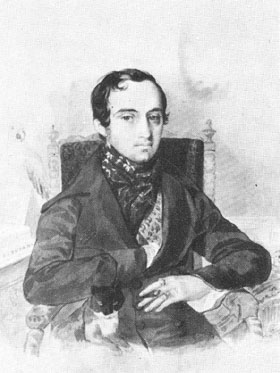

История формирования и деятельности библиотеки Московского отделения РМО
интересна и важна для нас не только сама по себе: почти весь её фонд стал
ядром библиотеки Московской консерватории, вновь учреждённого учебного
заведения при РМО, В соответствии с Рескриптом великой княгини Елены Павловны,
разрешавшим открытие учебного заведения, подобного санкт-петербургскому,
1 сентября 1866 г. в арендованном у баронессы Черкасовой доме на Воздвиженке
была открыта Московская консерватория. Её возглавил Н.Г. Рубинштейн.
В связи с началом работы консерватории РМО перевезло всё своё библиотечное
имущество в консерваторское здание.
История формирования и деятельности библиотеки Московского отделения РМО
интересна и важна для нас не только сама по себе: почти весь её фонд стал
ядром библиотеки Московской консерватории, вновь учреждённого учебного
заведения при РМО, В соответствии с Рескриптом великой княгини Елены Павловны,
разрешавшим открытие учебного заведения, подобного санкт-петербургскому,
1 сентября 1866 г. в арендованном у баронессы Черкасовой доме на Воздвиженке
была открыта Московская консерватория. Её возглавил Н.Г. Рубинштейн.
В связи с началом работы консерватории РМО перевезло всё своё библиотечное
имущество в консерваторское здание.
К сожалению, специальное помещение к тому времени отсутствовало, а потому материалы хранились бессистемно. Для обеспечения нужд учебного процесса дирекция выделяла средства на покупку и переписку необходимых нот и книг. «Приток материала, закупаемого на средства консерватории, был скромный. Достаточно сказать, что за 1867 / 68 учебный год, то есть за второй год её работы, консерватория купила нот и книг на 94 рубля, 85 коп. Между тем в том году в консерватории числилось уже 150 учащихся» (Медведева М.И.. С. 4) Отчёты показывают, сколь незначительны были эти ассигнования по сравнению с ценностью даров новому учебному заведению.
Ведущая роль в формировании библиотеки принадлежала Н.Г. Рубинштейну (передана Н.Г.Рубинштейном большая коллекции из его личной библиотеки). Самым крупным был дар княгини О.С. Одоевской, вдовы князя В.Ф. Одоевского, Одоевский одного из учредителей РМО, до последних дней жизни принимавшего горячее участие в жизни консерватории. В своём письме на имя председателя дирекции Московского отделения РМО Н.П. Трубецкого она писала: 
«М. Г. князь Николай Петрович! Воспоминания о глубоком сочувствии, с которым приветствовал покойный мой муж первоначальную мысль об учреждении в Москве консерватории, а также о постоянных, до последних дней жизни, заботах его на пользу и успех этого учреждения, естественно возбудили во мне желание почтить память супруга на поприще научно-музыкальной его деятельности пожертвованием в полную собственность консерватории того отдела его библиотеки, в котором хранятся творения заветных его представителей музыкального мира. С этою целию я поручила лицу мне близкому составить подробную опись как этим собраниям нот и книг, так равно и разным музыкальным и акустическим его инструментам, приносимым мною в дар консерватории совокупно с поименованною коллекцией нот и книг.
<...> Оставляю за собою твёрдое убеждение, что консерватория не забудет имени покойного моего мужа, который столь заботливо её любил и видел в ней верный залог преуспеяния музыкального искусства на русской почве. Покорнейше прошу вас, милостивый государь, принять уверение в полном моём К вам уважении.
Кн. О. Одоевская» (Москва, 23-го марта 1869 г. ЦИТ по: Медведева ми. С. 6-7)
1871 /72 учебный год Московская консерватория начала в здании на Большой Никитской улице, на месте которого впоследствии (в 1898-1901 гг.) было построено всем известное теперь её здание. Библиотека, к сожалению, осталась без собственного помещения, что не мешало ей и пополнять фонды, и пользоваться услугами библиотекарей.
Работа библиотеки регламентировалась «Правилами по внутреннему распорядку и управлению консерваторией», утверждёнными в этот период. Они гласили: «Изучающие теорию сочинения пользуются партитурами и музыкально-литературными произведениями из библиотеки консерватории, но не иначе как с разрешения своего профессора и в здании консерватории, так как никакие ноты или книги ученику на дом не даются. ... Ноты и вообще все материалы, потребные для учения, учащийся приобретает своими средствами».
Несмотря на проблему штатного библиотекаря, которая волновала дирекцию консерватории в этот период, архивные материалы свидетельствуют, что в библиотеке происходило регулярное, хотя и незначительное, пополнение фондов. Приказом дирекции Русского музыкального общества (от 7 сент. ] 872 г. - Э. Р.) всё имущество Московского отделения Общества перешло в собственность Московской консерватории, - таким образом и библиотечные фонды.
 Фонды изобиловали ценнейшими партитурами - оперными, симфоническими и камерными; сюда же
входила библиотека А.Н. Верстовского, которую он "завещал" Русскому музыкальному
обществу в Москве.
Фонды изобиловали ценнейшими партитурами - оперными, симфоническими и камерными; сюда же
входила библиотека А.Н. Верстовского, которую он "завещал" Русскому музыкальному
обществу в Москве.
Одним из лиц, способствовавших росту фондов, был П.И. Юргенсон. Войдя в состав дирекции Русского музыкального общества в 1875 году, он стал передавать безвозмездно консерваторской библиотеке все свои педагогические издания - и ноты, и книги.
В 1878 г. под музыкальные фонды было отведено отдельное помещение во втором этаже перестроенного дома, купленного ИРМО незадолго до этого у князя С.М. Воронцова. Размещение библиотеки в специальном помещении, разумеется, способствовало большей сохранности её фондов.
В начале, 1870-х г.г. помощники инспектора консерватории одновременно являлись и помощниками библиотекаря. Позднее функции библиотекарей стали выполнять сами инспекторы. Ниже приводится текст докладной записки в дирекцию Московской консерватории, составленной в 1883 г. инспектором научных классов И. Некрасовым, одновременно работавшим библиотекарем:
«В 1881 году было приобретено консерваторией на 250 с лишним рублей книг для научных классов. В настоящее время эта библиотека настоятельно требует пополнения, так как некоторые книги утрачены, другие совершенно истрепались и наконец, библиотека нуждается в пополнении необходимыми книгами новыми».
Была ещё одна категория библиотекарей - учащиеся консерватории, которую сменила другая группа библиотекарей-непрофессионалов; «то были консерваторские бухгалтеры. Бухгалтер принимал поступавшие ноты и книги, оценивал их, потому казалось естественным, чтоб он же и ведал ими. Первым бухгалтером - библиотекарем был Николай Леонтьевич Лангер.
Он совмещал эти две должности с 1874 по 1889 год, а с 1882 по 1884 год состоял кроме того смотрителем здания. Его работа по библиотеке вплоть до 1880 года не оплачивалась; это служит доказательством того, что работа библиотекаря ставилась не на первый план. Но за период его работы, то есть с 1874 по 1889 год, фонды библиотеки медленно, но непрерывно росли; стоимость их на 1 сентября 1889 года была определена в 16807 рублей, 81 коп; о количестве экземпляров, составляющих библиотеку, по-прежнему никаких сведений не имеется.
В 1888 г. «в консерваторию поступило пожертвование от Марии Александровны Демской - нотная коллекция умершего в 1884 году отца её, Александра Яковлевича Скарятина, бывшего секретарём русского посольства при папском дворе. Эта коллекция включала в себя музыкальные сочинения композиторов 16, 17 и 18-го столетий ... переписанных по заказу А.Я.Скарятина. Сочинения были переписаны аббатом Фортунато Сантини, итальянским музыкальным коллекционером и композитором.
«Осенью 1889 года библиотека переходила в ведение нового бухгалтера Петра Николаевича Кудряшёва. Ему на смену, в 1890 году, назначается ученик консерватории, валторнист Фриц Михайлович Лидак, который и остаётся библиотекарем до 1894 года, получая за свою работу 300 рублей в год. - В 1893 году в библиотеку поступает Иван Романович Шорнинг, сначала как помощник Ф.М. Лидака, а с 1894 года он делается самостоятельным библиотекарем. у И.Р. Шорнинга большая работа по совместительству: в 1895/96 - заведывание Музеем; в 1897 / 98 - исполнение обязанностей помощника инспектора - до 1899/900 года. Всё же основной его работой считалась библиотечная; таким образом, именно И.Р. Шорнинга надлежит считать первым библиотекарем консерваторской библиотеки, и период его деятельности - периодом зарождения организованной консерваторской библиотеки.
В 1905 году поступает новый библиотекарь - Вячеслав Гаврилович Гущин. Ему на помощь Директор консерватории, Михаил Михайлович Ипполитов-Иванов, направляет Виктора Ивановича Садовникова, в то время учащегося консерватории. За свою работу в библиотеке В.И. Садовников получал 21 рубль в месяц. В.Г. Гущин завёл запись в так называемую "Книгу поступлений"». Таким образом, консерватория постепенно отказалась от вынужденного волонтёрства студентов в библиотеке.
В 1908 г. на должность библиотекаря поступает Евгений Алексеевич Колчин. Библиотечную работу он совмещает с заведыванием Музеем имени Н,Г,Рубинштейна. При нём растёт число работников библиотеки: у него два штатных помощника. Е.А. Колчин вводит упрощённую номерную расстановку нот на полках. При нём принимаются некоторые правила пользования библиотекой: так, партитуры не выдаются учащимся на дом, в отличие от клавиров, которые выдаются при условии внесения залога в суммe 5 рублей за каждый экземпляр. Пользовались библиотекой педагоги и учашиеся консерватории, а равно концертная организация РМО, и не только Московского отделения, но, в некоторых случаях, и других городов , библиотека стала удовлетворять не только учебные, но и исполнительские запросы. В связи с этим доминантой её деятельности стало пополнение фонда произведениями русских и зарубежных композиторов ( в 1901г. был открыт Большой зал Московской консерватории).
В 1914 г. Е.А. Колчина на его посту сменил Пётр Александрович Вельдеман, с 1911 г. работавший помощником консерваторского библиотекаря. Трудовой стаж ПА Вельдемана (1866 г. р.) - 18 лет.
После национализации консерваторий Декретом от июля 1918 г., «с уничтожением ... зависимости от Русского музыкального общества», многое изменилось в стенах Московской консерватории. Происходят значительные перемены в подходе к комплектованию фонда. Регулярно выделяются средства для планового комплектования. С 1922 г. библиотека - получатель обязательного (бесплатного) нотного экземпляра Центральной московской книжной палаты (ныне - Российская книжная палата), а также новых изданий тогдашнего Музсектора Госиздата. Кроме того, она пополняется зарубежными изданиями, приобретаемыми за валюту. В1924 Г. в библиотеку был влит нотный и книжный фонд библиотеки Хоровой академии (бывшего Синодального училища церковного пения) около 20 тыс. экз.
В число переданных в библиотеку собраний не вошло ценное собрание старинных крюковых рукописей (тогда же переданное Государственному историческому музею). Культовые хоровые произведения позднее были изъяты из НМБТ и уничтожены. Во второй половине 1920-х гг. библиотека, следуя велению времени и задачам обслуживания, расширила круг читателей и свой «репертуар». Появилась острая необходимость в общем повышении качества её работы.
 «С целью поднятия качества работы библиотеки и введения плановости в
её комплектование Правление консерватории предлагает профессору Михаилу Владимировичу
Иванову-Борецкому взять на себя научно-административное руководство библиотекой. На него
возлагаются заботы о штатах и о комплектовании библиотеки, включая выписку музыкальной
литературы из-за границы».
«С целью поднятия качества работы библиотеки и введения плановости в
её комплектование Правление консерватории предлагает профессору Михаилу Владимировичу
Иванову-Борецкому взять на себя научно-административное руководство библиотекой. На него
возлагаются заботы о штатах и о комплектовании библиотеки, включая выписку музыкальной
литературы из-за границы».
Приход Иванова - Борецкого на должность руководителя библиотеки был большой удачей. Он сыграл важную роль в дальнейшем развитии и упрочении её фондов.
18 октября 1924 г. на основании постановления Российской академии художественных наук (РАХН) от 22 августа 1924 г. между академией и консерваторией было заключено соглашение, по которому академия передавала консерватории Музыкально-академическую библиотеку (бывшую "Музыкально-теоретическую") со всем инвентарём и библиотечным имушеством». Библиотеку принимал М.В. Иванов-Борецкий. В результате фонды консерваторской библиотеки увеличились более чем вдвое и составили 71 296 экз. ( из книги" Библиотека Московской консерватории" Э.Б.Рассиной).